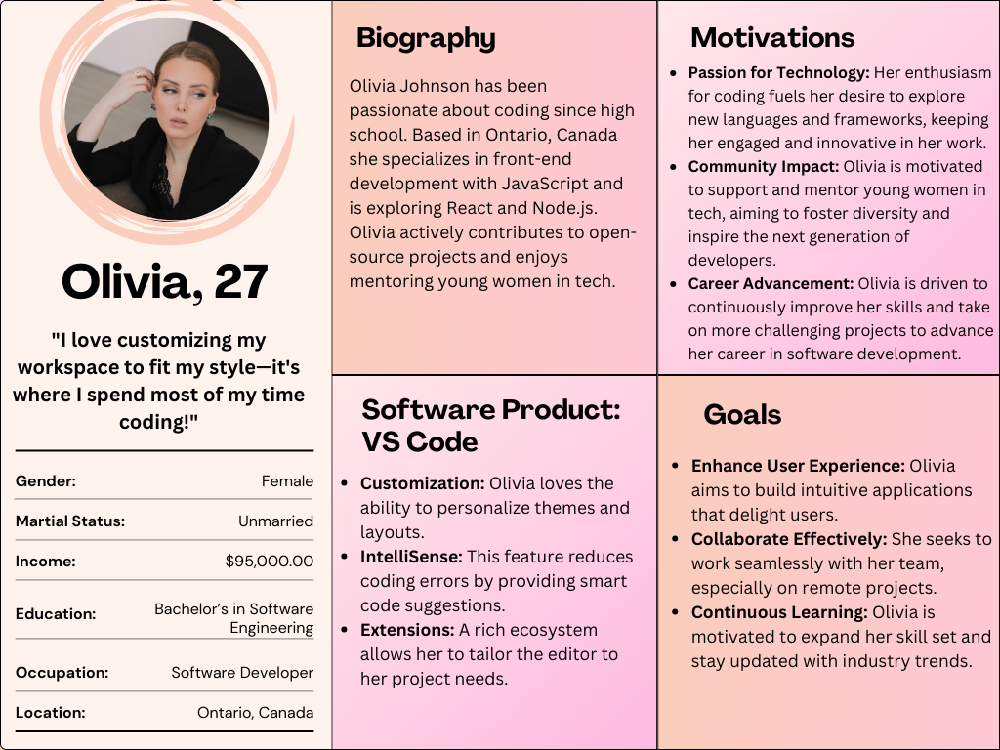

One software that I believe stands out for its design is Visual Studio Code, whose simple and clean interface allows for easy navigation while extensive customization options like themes and fonts let users tailor their experience to their preferences. The design emphasizes a responsive layout, adapting to different screen sizes and enhancing accessibility across devices. Integration with a wide range of extensions allows developers to personalize their digital environment, enhancing productivity and creativity. This design prioritizes user experience and productivity, making coding more efficient and enjoyable. Features such as IntelliSense and built-in Git support streamline development tasks, helping to minimize bugs. The command palette and keyboard shortcuts allow for quick execution of commands. Additionally, users can link their accounts with various platforms to save files seamlessly. Moreover, it supports real-time collaboration through Live Share, enabling users to work together seamlessly on projects from different locations. The integrated debugging interface is user-friendly, providing a visual representation of breakpoints and call stacks, simplifying the debugging process. Additionally, the active community surrounding VS Code contributes to its ongoing improvement with regular updates for extensions that enhance functionality. This blend of powerful features and user-friendly design makes Visual Studio Code a top choice for developers.
Software design is important because it affects efficiency, user-friendliness, and overall satisfaction. A well-designed interface helps users easily learn and utilize features, fostering adoption and engagement. Reliable software often receives regular updates, which build trust and encourage continued use. Ultimately, effective design not only enhances productivity by equipping users with essential tools but also makes software more enjoyable to use, leading to long-term preference and loyalty.In the requirements gathering stage, we identify and document the specifications needed for a software project, focusing on both functional and non-functional requirements. This process employs various methods such as interviews to capture user needs, surveys for broader data collection, brainstorming sessions for creative input, and direct observation of users with existing systems. Key questions include: What problems are we solving? What functionalities do clients expect? Who are the target users, and how will they interact with the application? We also consider constraints like technical limitations and budget restrictions. This stage is important as it creates the foundation for the entire software development lifecycle, ensuring a clear understanding of user needs and expectations. Efficient requirement gathering helps prevent misunderstandings, mitigates risks related to competing priorities, and enhances user satisfaction through improved communication. Finally, it guides development teams in creating a product that effectively addresses identified problems and fulfills user needs.
5 User Stories for Visual Studio Code: 1. As a programmer, I want an option to debug code in any programming language, so that I can efficiently identify and fix bugs. 2. As a programmer, I want the ability to download multiple extensions simultaneously, so that I can enhance my coding environment quickly. 3. As a programmer, I want a feature to upload my projects to Microsoft OneDrive, so that I can ensure my work is backed up in the cloud. 4. As a coder, I want an option to duplicate my program into a new tab, so that I can reference and edit my code side-by-side without losing context. 5. As a user, I want customizable keyboard shortcuts, so that I can streamline my coding workflow and improve my productivity.Visual Studio Code (VS Code) is a powerful, open-source code editor developed by Microsoft. It provides a lightweight yet feature-rich environment for developers, supporting a wide range of programming languages and frameworks. With its strong customization options, intelligent code suggestions, and real-time collaboration features, VS Code enhances productivity and fosters a seamless coding experience.

Effective communication is the backbone of successful software design, influencing every phase of the development process. Clear communication helps mitigate misunderstandings, aligns goals, and fosters collaboration among developers, designers, stakeholders, and end-users. Four key elements of effective communication in software design are active listening, clarity, empathy, and feedback. Active listening ensures that team members truly understand each other’s ideas and concerns, creating a more inclusive and collaborative environment. Clarity is vital for conveying complex technical concepts and project requirements, eliminating ambiguity and keeping everyone on the same page. Empathy allows team members to appreciate the perspectives of users and stakeholders, leading to more user-centered designs. Feedback drives continuous improvement and alignment by encouraging open, constructive communication, helping teams identify issues early and refine their work before critical stages. Without effective communication, software design cannot succeed, as it hinders collaboration, creates flawed assumptions, and results in products that fail to meet user needs.
In my experience, I faced a communication challenge during a project to create an online clothing store website. I was eager to showcase a broad selection of options but ultimately overcomplicated the design, missing my teacher’s expectation for simplicity and user-friendliness. This issue stemmed from a lack of clarity in communication regarding project requirements and my assumption that more choices equated to a better product. I didn’t ask enough clarifying questions to ensure I fully understood her vision. Given what I’ve learned in class, I now recognize that if I had actively sought feedback and confirmed the specific design expectations upfront, I could have avoided overcomplicating the project and save time. This experience taught me the importance of clear, proactive communication and the value of seeking feedback early to ensure alignment with stakeholder needs, which is essential for successful project outcomes.The Desire Line design principle refers to the natural or shortest path that people take when given a choice, often bypassing designated routes like walkways, stairs, or marked crossing points. This principle highlights how users naturally head toward the most intuitive or efficient route, even if it is different from the intended design. In software, this can be seen when users create shortcuts or find quicker workflows than what was initially designed. The principle encourages designers to observe user behavior closely and adapt the design to meet those natural tendencies, improving the user experience.
A real-life example of the Desire Line principle can be observed at bus stations, where passengers often cross the road at the end of the station instead of using the designated stairs or underpasses. Although the infrastructure is designed to guide people in a specific direction, users tend to choose a faster, more direct route, highlighting the disconnection between design intentions and human behavior. Similarly, software like OBS Studio, a popular streaming tool, allows users to create custom hotkeys for actions such as starting or stopping streams, switching scenes, or muting audio. These shortcuts enable users to bypass the interface and quickly access key features, similar to pedestrians opting for the most efficient route at a bus station. By accommodating these natural behaviors, OBS creates a more intuitive and efficient user experience, allowing users to work more effectively during live broadcasts.